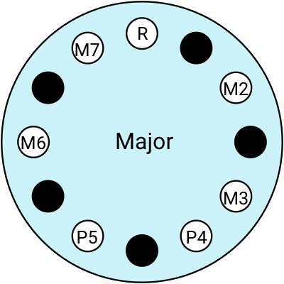
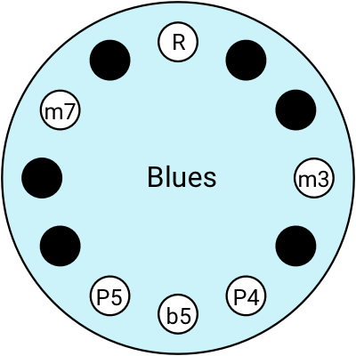
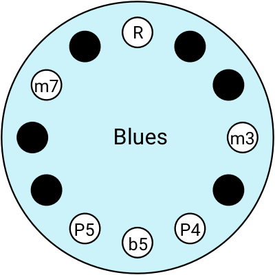

Pitch is frequency
Most people find it easy to spot the difference between a very low rumbly bass sound and a very high squeaky soprano. Those different pitches are produced by different frequencies. When you hear a low sound, your eardrums are vibrating at a lower frequency than when you hear a high-pitched sound.
The frequency is measured in cycles-per-second, or Hertz (Hz). If I pluck the lowest string on a guitar, it will oscillate at 82Hz, physically wobbling back and forth 82 times in a second. If I pluck the highest string it will wobble at about 330Hz. That faster vibration is what we interpret as a high pitch.
Music is made by avoiding most of the pitches
In general, our ears can pick up on the range of frequencies between 20Hz and 20,000Hz.
We find most combinations of pitches ugly, but a few of them sound beautiful (probably because we’re wired to find beauty in math). To construct a musical system, the first job is to remove almost all of the possible pitches and create a small set that can be recombined in ways that sound good to us. Each pitch within the set is called a note.
Lemme explain how we created the set of notes we use in most Western music.
Simple ratios sound good to us
Click to listen to these different combinations. If you come from a similar music culture to me, then one of these will sound sweet while the other two are ugly. The ‘sweetness’ you’re hearing is the 2:1 relationship:


By a “2:1” relationship, I mean one note is twice in the same time it takes the other note to oscillate once. The two notes fit nicely together.
Here’s some other ratios you can listen to. Let’s play two notes together and notice which ones sound good to you:
Maybe it is not immediately obvious when you listen to these pitch combinations out of context, but the point is that most Western music is built around these simple frequency ratios, like 2:1, 3:2, 4:3, 5:4, etc. We tend to avoid the more complex ones like 81:73.
In Western music, the set of pitches we’ve chosen is a compromise between pure mathematical principles, our subjective experience of sound (psychoacoustics), and the physical limitations of constructing musical instruments. Other cultures have chosen different pitch sets, which can sound jarring to Western ears.
So how do we get from these pure mathematical ratios to the notes we use in our music?
An octave is a 2:1 relationship
When one note is twice the frequency of another, we say they have an octave relationship. The octave is the distance between the two pitches.
In my research, I found this explanation from Chris Ford very helpful: he said the two pitches in an octave relationship feel related in the same way that noon on Monday is related to noon on Tuesday. We recognise that they are different things but they have important characteristics in common.
1 octave = 12 semitones
In Western music, we start from the octave, and then break it down into 12 equally-sized pieces called semitones. The full set of 12 notes is the chromatic scale. When you take the 13th step, you’re at the 1st note of the next octave.

It’s crucial to understand that a semitone is a distance between two pitches, it’s an interval, a relationship between two points in the space of all possible pitches.
🔈 You can click on these buttons to hear each note:
I was surprised to learn that the musical intervals we use don’t line up perfectly with the mathematical ratios.
Next up, let’s explore how these semitones and octaves and things show up in musical instruments...
Instruments are musical opinions
Any instrument makes some musical options possible, at the exclusion of all the rest. Let’s look at some stringed instruments for example.

Stringed instruments are constructed around a fundamental physical concept: shorter strings make a higher pitch.
A harp has short high-pitched strings, and long low-pitched strings. A piano is like a harp with hammers attached: the keys at the high end strike short strings, and the low-pitch keys are hitting the longer strings. That’s why a grand piano has its distinctive shape. On a guitar or a cello, we effectively reduce the length of the string by pressing it against the fingerboard.
Guitars have a fret for each semitone
Let’s take a closer look at the guitar to see how the semitones and octaves work.
Say I have a guitar string that is held in tension so plucking it makes a pitch of 100Hz. If I make the string length half as long, the pitch will be 200Hz, and we’ll hear the 2:1 octave relationship.
The fret for the first octave is halfway between the nut at the top and the bridge at the bottom of the string. If the scale length of the guitar is 22 inches, you can hear the first octave by playing the fret which is located 11 inches from the bridge (22 ÷ 2 = 11). That’s the 2:1 relationship again.
If you want to hear the second octave, halve the string length again, down to 5.5 inches (11 ÷ 2 = 5.5).

If you look more closely at the guitar diagram, you can count 12 frets from the “nut” up to the first octave: that’s one fret per semitone.
🤔 But wait a minute, why is it called an octave?
“Oct” implies 8, but our octaves are divided into 12 notes!? Why the mismatch here? For me, this little puzzle is right at the heart of why Western music theory is hard to understand.
To get to the bottom of it, we have to consider the piano.
Pianos highlight the major scale
It is rare to use all the 12 notes from the chromatic scale in a single piece of music. Usually we select a smaller subset to work with. Let's look at the major scale for example.
To build a major scale, you choose anywhere on the chromatic scale as your “root”, and then make a specific pattern, keeping some notes and skipping the others. I think of the pattern as “2212221”: that’s how many semitones I have to move to find each note.
| Chromatic scale | 1 | 2 | 3 | 4 | 5 | 6 | 7 | 8 | 9 | 10 | 11 | 12 | 13/1 |
| Distance to the next | 2 | 2 | 1 | 2 | 2 | 2 | 1 | ||||||
| Major scale | 1 | skip | 2 | skip | 3 | 4 | skip | 5 | skip | 6 | skip | 7 | 8/1 |
| The chromatic scale: | ||||||||||||
| 1 | 2 | 3 | 4 | 5 | 6 | 7 | 8 | 9 | 10 | 11 | 12 | 13/1 |
| The major scale: | ||||||||||||
| 1 | 2 | 3 | 4 | 5 | 6 | 7 | 8/1 | |||||
If you look at the top of a piano keyboard, counting both white and black keys, there’s the familiar chromatic scale with all 12 notes. These 12 keys map directly across to the 12 frets on the guitar.

Now look at the bottom and count just the white keys and you’ll see a major scale, which has only 7 notes.
The “6” of the chromatic scale at the top is the same colour as the “4” of the major scale at the bottom, because they are the same pitch. They sound precisely the same, we just have different names for them depending on what counting system you use.
So this is why it is called an oct-ave: if we are only counting the white keys of the major scale, the 8th key is the octave of the 1st key.
This is one of the concepts that made music theory so confusing to me: to understand intervals, I need to use the 12-step chromatic scale. But the names we use for these intervals are derived from the 7-step major scale. So I have to use two counting systems simultaneously. That sucks! It’s basically the same as asking “how long does it take to drive 50 miles at 80 kilometers an hour?” You can work it out if you have to, but it seems like an arcane and pointless puzzle if what you’re trying to do is learn how to drive.
If you learn one thing, learn intervals
So far I’ve showed you two intervals: octaves and semitones. Remember, an interval is a relationship between two pitches. The octave is a 2:1 relationship between two notes, and the semitone is one twelfth of an octave. Here are the intervals you need to learn to understand how Western music is constructed:
- 1 semitone = Minor 2nd
- 2 semitones = Major 2nd
- 3 semitones = Minor 3rd
- 4 semitones = Major 3rd
- 5 semitones = Perfect 4th
- 6 semitones = Flattened 5th
- 7 semitones = Perfect 5th
- 8 semitones = Minor 6th
- 9 semitones = Major 6th
- 10 semitones = Minor 7th
- 11 semitones = Major 7th
- 12 semitones = Octave
If you learned music with a guitar, like me, these names just feel intentionally confusing. You’re telling me I can find a Perfect 5th by moving up 7 semitones. Why is that called a 5th instead of a 7th!?

It was only when I started learning about piano that I understood this weird naming system. From the perspective of a piano keyboard, the names make perfect sense: you can see in this diagram that the “Major 3rd” covers the distance of 3 white keys. The Perfect 5th covers 5 white keys.

Note: in this diagram I’ve introduced the root; that’s the lowest of the two notes in an interval. So counting with the major scale at the bottom of the keyboard, the root is on the 1 and the Perfect 5th is on the 5.
If you’re learning music without a keyboard, I guess you just have to learn the intervals by rote, you have to remember there’s 7 semitones in a Perfect 5th and 11 in a Major 7th, and so on. If you are going to learn one musical concept, get this one clear. Intervals are the Lego blocks of Western music; you can construct anything out of them.
Pianos and guitars optimise for different things
One nice thing about a guitar is that you can move an interval around and it will always be easy to find.
Once you know that there are 7 semitones in a Perfect 5th, you can start with your root on Fret 4 and move up 7 frets to find the Perfect 5th on Fret 11. If you move the root to Fret 1, the Perfect 5th is easy to find on Fret 8.

In music terms this movement is called transposing. It’s simple to transpose music on a guitar: move your hand two frets to the right and you’ve transposed the tune two semitones up.
It’s much more complicated on a piano. If I move the root a couple of steps to the right, the intervals go haywire!

Before the transposition, all the major intervals were on the white keys. Now they’re on the black keys.
If you’re wondering what is happening here, you count the number of semitones using the chromatic scale at the top of the diagram. The Major 6th for instance is a distance of 9 semitones, so if the Root is on 1, the Major 6th is on 10.
Before transposing, the Major 6th interval landed on a white key, but now that I transposed the Root over a couple of steps, it lands on a black key.
I honestly don’t know how pianists remember this! If you’re confused, that’s because the design choices of a piano keyboard make some parts of music theory straightforward, and other parts confusing. So at this point in my learning journey I started to wonder if I could invent new instruments that make music theory more intuitive...
Could a new instrument make music easier to learn?
I like the straight line of the guitar, because it makes it easy to transpose, and I like the black and white of the piano because it helps me find the major intervals. Here’s my first line of inquiry: what if we wrap the keyboard round into a circle?

In this new “clock” diagram I have kept the same pattern of 7 white notes and 5 black notes, but it starts at the top and proceeds clockwise, in contrast to the keyboard which starts at the left and proceeds to the right.
(In my research I found a bunch of other people who have taken a similar approach to visualising music, most notably Allan Holdsworth.)
With this imaginary clock-shaped instrument, I can visualise the intervals like arcs of the circle (and you can click to hear them):


Using the clock layout, I think of the Major 6th as an interval of “9 hours”. I can move the Root to anywhere, and the Major 6th is still “9 hours” away, whether that’s from 2 until 11 o’clock, or 7 to 4 o’clock.


Let’s see what happens if I try to explain some more music theory with these clock diagrams...
Multiple pitches together make a chord
The songs we play in the West are made of chord progressions. A chord is a combination of pitches played together simultaneously, and a progression is a sequence of chords.
There are many different possible chords, but you can go a long way with just a handful. The first two chords you generally learn are the major triad and the minor triad (usually referred to simply as major chords and minor chords). It’s called a triad because it is made of 3 notes played together.
A major triad chord is made of the Root, the Major 3rd, and the Perfect 5th.
Let’s see what a major chord looks like on the clock diagram. I’ve labelled the Root (R), the Major 3rd interval (M3), and Perfect 5th interval (P5). Here is a variety of major chords, all the same shape, just rotated to different locations. Thinking in clock terms, the Major 3rd interval is always “4 hours” after the Root, and the Perfect 5th is “7 hours” after the root.
👇 Click to listen


4 different major chords
Now let’s look at the minor chords.
A minor triad chord is made of the Root, the Minor 3rd and the Perfect 5th.
The minor chords look pretty similar to major chords, the only difference is that the Major 3rd interval (M3) is replaced with a Minor 3rd (m3).


4 different minor chords
A lot of pop, rock and folk music is constructed from these two very simple, very common triad chord shapes (triad = 3 simultaneous pitches). Maybe you saw this viral music video where they play 50 different hit pop songs all using the exact same sequence of chords.
This brings up a good question...
🤔 Why do some chords sound good together?
I’m going to explain the basics of chord theory, and hopefully like me, you will be surprised to learn how easy it is. I’m going to make 7 chords starting from the 7 white keys of the piano.
Let’s start with a triad, playing three pitches together. I’ll visualise it on the keyboard and the clock diagram (and you can click to listen).

We’re playing two intervals here. If you look at the chromatic counting system at the top of the keyboard, you can count the semitones and work out that there are 4 semitones (5 - 1 = 4) in the first interval and 7 semitones in the other one (8 - 1 = 7). If you memorised the table of intervals, you know this is the Major 3rd (4 semitones) and the Perfect 5th (7 semitones).
We’re playing a triad composed of the Root, the Major 3rd and the Perfect 5th: so this is a Major chord.
Musicians sometimes label chords with Roman numerals. Using the Roman numeral system, this is called the I chord.
Now keeping the same finger spacing on the keyboard, we move over one step to the right to find the second chord.

Looking at the chromatic counting system at the top of the keyboard again, you can count the semitones and work out that there are 3 semitones (6 - 3 = 3) in the first interval and 7 semitones in the other one (10 - 3 = 7). If you know the table of intervals, you recognise this is the Minor 3rd (3 semitones) and the Perfect 5th (7 semitones).
So this chord is minor, because we’re playing the Root, the Minor 3rd, and the Perfect 5th.
This is called the ii chord because it is II like 2 in Roman numerals, but it is in lower case because it’s a minor chord.
If you keep your finger spacing the same and continue to move one step at a time, you get the iii chord, then the IV chord, the V chord, and then the vi chord.


The seventh chord in the series is a bit different: the two intervals are a Minor 3rd (3 semitones) and a Flattened 5th (6 semitones). This one is called a "diminished" chord, indicated with a little ° symbol, like this: vii° chord.

When I learned this I thought it was hilarious! You can find the 7 most common chords in the history of Western pop music by making a single shape with your hand and moving it along the keyboard 6 times.
All of those 50 hit pop songs use the same chord progression, from I to V to vi to IV, which you can hear by clicking here (click again to stop):

One of the reasons those 50 songs all sound different is because they each have their own melody. You can think of the chord progression as the “background” and the melody as the “foreground” of a song. In a way, the chords create the general mood, and the melody is the specific, memorable sequence of notes that makes the song memorable.
Here’s the I, V, vi, IV chord progression again, but this time I've added a random melody. Each time you restart the song, it generates a new melody, by randomly choosing a few notes from the Major scale.
If you have understood this so far, congratulations because you can now write songs as well as The Beatles or Beyoncé! 😂
Different modes make different moods
In the previous example, we constructed a sequence of chords based on the Major scale. That scale has its own emotional flavour; I find it kinda cheesy. We can find different musical moods by switching modes.
Modern Western music has 7 modes, each with its own distinct flavour. All 7 modes use the same notes from the Major scale, in the same order, but we just change what note we start on:


💡 Jake Lizzio is a fantastic guitar teacher on Youtube. He has an excellent couple of videos introducing modes: this one on the emotional/tonal qualities of each mode and this one on how to practice them on a guitar.
Modes have these cool Greek names, but they’re hard to remember so we have more common names for a couple of them: we call the Ionian mode the Major scale, and the Aeolian mode the Minor scale.
Let’s look into the Aeolian mode more closely. I'm going to build up the 7 triad chords of the Aeolian mode, just like I did with the Ionian mode (i.e. the Major scale) in the previous example. To get from the Ionian mode to the Aeolian mode, the Root is transposed up by a Major Sixth. So that puts the first chord here. It’s minor, so we call it the i chord:

Then I can build up the rest of the sequence just like last time, I just move up the keyboard playing triads:


I’m curious to know what happens if we shift the I, V, vi, IV chord progression of the previous example into the Aeolian mode:
I’ll add the random melody again too. Remember you can generate a new melody by starting and stopping (click on, click off):
Can you hear how the emotional/tonal/aesthetic quality of this mode is really distinct from the previous one?
More interesting chords
So far all the chords we’ve used are triads composed of the Root, a Third, and a Fifth. Of course we can make many different chord shapes beyond these ones.
For example, if we take a major chord and replace the Major 3rd with a Major 2nd: that’s a suspended 2nd because you “suspended” the 3rd and replaced it with a 2nd.


There’s no need to be limited to triads, we can add more intervals and create more complex chords. For example it’s common to hear “seventh” chords in blues music:
A major seventh chord starts with a major chord and adds the Major 7th (M7).
A dominant seventh chord starts with a major chord and adds the Minor 7th (m7).


A minor seventh chord starts with a minor chord and adds the Minor 7th.


Each of these different chord shapes has a distinctive emotional quality. Different genres of Western music are to some degree characterised by the types of chords they use.
Blues music
Maybe you’ve heard of a “12-bar blues”. This refers to a very common chord progression at the heart of blues music. A basic 12-bar blues is built with I, IV, and V chords, like this:
| I | I | I | I |
| IV | IV | I | I |
| V | IV | I | I |
Here’s a simple example from a guitar teacher on Youtube.
For a more interesting example of a 12-bar blues, check out this performance of Sweet Home Chicago by Robert Johnson:
He’s following a slightly different sequence of I-IV-V chords:
| I | IV | I | I |
| Oh | baby don't you want to | go | |
| IV | IV | I | I |
| Oh | baby don't you want to | go | |
| V | VI | I | V |
| Back to the land of California | to my sweet home | Chicago | |
One of the reasons Robert Johnson’s blues sounds a lot more interesting than the guitar teacher’s, is because he embellishes some of the basic IV and V chords with the seventh.
If you have an instrument, experiment with variations on the I-IV-V chord progression, try making them major or minor, or add in some seventh chords. Probably whatever you come up with will sound kinda bluesy.
Jazz music
If you want to get more sophisticated, you can start exploring jazz music. For example, see this tutorial for the jazz standard “Autumn Leaves”.
It opens with a progression of seventh chords, then there’s a half diminished chord which is a minor seventh chord where the 5th has been flattened.

What makes jazz distinctive is the increasingly complex chords. At this point it starts to get a bit like algebra so you need plenty of cigarettes and whisky to make any progress.
From here on is just a rough draft, I will keep working on it...
Other scales
I showed you how to turn the Major scale into 7 different modes. There are loads of other scales too, each with their own unique pattern and distinctive tonality.
Here are some of the ones I use:


 



If you're not super confident in your scales and intervals, it’s always a safe bet to play a pentatonic scale.
If you're a guitarist you can visualise these scales on your fretboard with this sweet free app: Fretastic. Notice it also includes backing tracks so you can learn these scales by playing musically, rather than just going up and down.
The tonnetz
Keyboards and fretboards are organised around semitones. But the most common intervals are Fifths and Thirds: what happens if we make a keyboard that is organised around these intervals, instead of semitones? This gives you a Tonnetz lattice, first described by math genius Leonhard Euler in 1739, and beautifully explained here.

With this layout, a major chord is always an upwards-pointing triangle, a minor chord is a downwards-pointing triangle. The minor seventh is down and two steps to the right.

This is maybe the most logical layout for making Western music, if you think in terms of intervals. Consider for example this song Gymnopédie No. 1 by Erik Satie, shown here first on a Tonnetz lattice, and then on a piano with traditional sheet music notation. The Tonnetz makes the tonal relationships so much clearer than the keyboard: